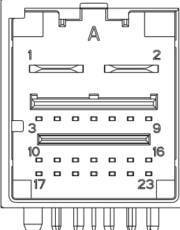

Универсальное оборудование
Диагностический прибор, мультиметр, ноутбук, ПО для анализа данных CAN и записывающее оборудование (например, ZLG или CANoe), игольчатые щупы жгута проводов, кабель-переходник OBD-Ethernet, кабель передачи данных USB с разъемом Type-C и т.д.
После снятия/повторной установки радара миллиметрового диапазона переднего обзора в сборе или после удара по переднему бамперу необходимо заново выполнить профессиональную калибровку радара миллиметрового диапазона переднего обзора в сборе.
Если на автомобиле после тяжелого ДТП имеется деформация переднего бампера, из-за чего радар миллиметрового диапазона переднего обзора в сборе не может быть установлен в исходное проектное положение, необходимо восстановить геометрию механических конструкций, обеспечить нахождение контроллера в исходном монтажном положении и только после этого выполнить профессиональную калибровку.
1. Подтвердить жалобу клиента, зафиксировать данные с помощью фото- или видеосъемки;
1) Время, место и погодные условия в момент возникновения неисправности, а также комплектация автомобиля;
2) Состояние данного автомобиля, например отображение информации о неисправности на комбинации приборов, звуковая сигнализация, посторонний шум и т.д.;
3) Окружающая обстановка и дорожные условия (например, обстановка спереди и на соседних полосах, наличие явных препятствий, дорожных знаков и т.д.);
2. Визуально проверить наличие явных следов механических или электрических повреждений, а также соответствие монтажного положения исходному проектному состоянию;
3. Визуально проверить передний бампер в сборе на наличие явных следов деформации от столкновения, убедиться в отсутствии посторонних предметов прямо перед контроллером (защитная пленка кузова, тонировочная пленка, наклейки и т.д.), включая обледенение поверхности, налипание пыли или грязи, а также проверить отсутствие провисания переднего бампера; ремонтные работы по переднему бамперу выполнять в соответствии с требованиями, приведенными на Схема расположения компонентов
Таблица визуального осмотра
|
Механическая часть |
Электрическая часть |
|
Радар миллиметрового диапазона переднего обзора в сборе, монтажный кронштейн |
Жгут проводов и разъемы |
|
Передний бампер |
Предохранитель |
4. Вручную проверить надежность крепления радара миллиметрового диапазона переднего обзора в сборе на отсутствие люфта, трещин в фиксаторах, повреждений контроллера и кронштейна;
5. Если визуальная проверка пройдена успешно, с помощью диагностического прибора считать информацию о версии, архивные и текущие коды неисправностей радара миллиметрового диапазона переднего обзора в сборе и связанного контроллера (центрального компьютера C3B) и выполнить ремонт, используя таблицу симптомов неисправностей; Перечень DTC радара миллиметрового диапазона переднего обзора в сборе
6. После завершения ремонта неисправности обязательно удалить коды неисправностей радара миллиметрового диапазона переднего обзора в сборе
При замене компонентов или обновлении программного обеспечения в смежных системах, таких как C3B, IBCU, EPS, BDC, необходимо строго соблюдать процедуры ремонта/обслуживания соответствующих систем и удалить коды неисправностей радара миллиметрового диапазона переднего обзора в сборе.
7. При возникновении или повторном проявлении проблемы можно нажать кнопку экстренной записи для сохранения данных в целях последующего анализа.
8. Если причину неисправности локализовать не удается, записать данные CANFD (ADAS ECAN, формат данных.blf или.asc) для проведения анализа. С помощью ноутбука, ZLG или CANoe выполнить сбор сообщений ECAN с 40-контактного разъема контроллера домена движения и парковки; соответствующие контакты ECAN показаны на рисунке ниже
Центральный компьютер движения и парковки: контакты ECAN соответствуют A10 (CAN3H), A11 (CAN3L)
